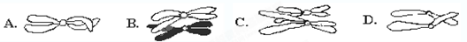
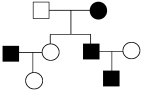
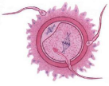
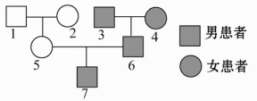
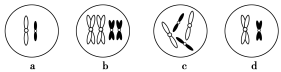
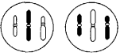
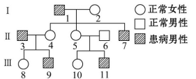
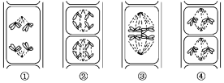
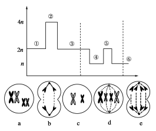
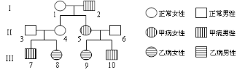

人教版必修2第2章《基因和染色体的关系》
单元测试卷（A卷）
一、选择题（本大题共25小题，每小题2分，共50分。在每小题给出的四个备选项中，只有一项是符合题目要求的）
1.
题干：下列关于减数分裂概念及过程的叙述中，错误的是( )
选项：
A.发生的范围是有性生殖生物
B.过程是原始生殖细胞产生成熟生殖细胞
C.特点是染色体复制一次，细胞连续分裂两次
D.结果是成熟生殖细胞中染色体数目与体细胞相同
【解析】进行有性生殖的生物才能进行减数分裂；减数分裂过程是原始生殖细胞产生成熟生殖细胞的过程；减数分裂过程中染色体复制一次，细胞连续分裂两次，包括减数第一次分裂和减数第二次分裂；减数分裂后形成的成熟生殖细胞中染色体数目是体细胞中染色体数目的一半。
【答案】D
2.
题干： 家兔是进行有性生殖的生物，之所以能保持前后代染色体数目的恒定，是因为在生殖过程中要进行( )
选项：
A.减数分裂和有丝分裂 B.有丝分裂和受精作用
C.减数分裂和受精作用 D.染色体复制和平均分配
【解析】有性生殖的生物,在生殖过程中要进行减数分裂和受精作用，是保持前后代染色体数目的恒定的两个关键过程。
【答案】C
3.
题干：
四分体时期常会发生交叉互换，下列哪个图可正确表示交叉互换？
选项：

【解析】交叉互换是发生在同源染色体之间的，B所示才是同源染色体。
【答案】B
4.
题干：下列有关性染色体的叙述正确的是（ ）
选项：
A.多数雌雄异体的动物有性染色体
B.性染色体只存于性腺细胞中
C.哺乳动物的体细胞中没有性染色体
D.植物的性染色体类型都是XY型
【解析】多数雌雄异体的动物有性染色体，存在于该生物的所有细胞中。
【答案】A
5.
题干：
下列关于色盲遗传的叙述，错误的是（ ）
选项：
A.色盲患者男性多于女性
B.母亲色盲，儿子一定色盲
C.父亲色盲，女儿可能色盲
D.父母都不色盲，子女一定不色盲
【解析】色盲是位于X染色体上的隐性基因控制的遗传病，Y染色体上没有其等位基因，女性体内有两条X染色体，只有当两条X染色体上的色盲基因纯合时才会发病，而男性体内只有一条X染色体，只要含有色盲基因就会表现出色盲，所以色盲患者男性多于女性。父母都不色盲，母亲可能是携带者，可能会生出色盲的儿子。
【答案】D
6.
题干：用显微镜观察细胞时，发现一个细胞中有8条形状、大小各不相同的染色体，并排列于赤道板上，此细胞处于（ ）
选项：
A.有丝分裂中期 B.有丝分裂后期
C.减数分裂第一次分裂中期 D.减数分裂第二次分裂中期
【解析】该细胞不含有同源染色体，其染色体条数为体细胞的一半，又因着丝点排列在赤道板上，所以，所观察的细胞是处于减数第二次分裂中期的次级性母细胞。
【答案】D
7.
题干：下图是某家族患一种遗传病的系谱图（图式：□正常男、○正常女、■患病男、●患病女）。分析该病不可能为（ ）
选项：

A.常染色体隐性遗传
B.常染色体显性遗传
C.X染色体隐性遗传
D.X染色体显性遗传
【解析】如果是X染色体显性遗传，父亲患病，其女儿一定患病，可图中却出现患病男性的女儿正常，故不可能是X染色体显性遗传。
【答案】D
8．
题干：
下列关于基因和染色体关系的叙述，错误的是( )
选项：
A．染色体是基因的主要载体
B．基因在染色体上呈线性排列
C．一条染色体上有多对等位基因
D．性染色体上的基因，并不一定都与性别的决定有关
【解析】一般来说，一条染色体上有一个DNA分子，每个DNA分子上有许多基因，基因在染色体上呈线性排列。等位基因是位于同源染色体的同一位置的基因，不是位于一条染色体上。性染色体上的基因，并不一定都与性别的决定有关，如色盲基因、血友病基因等。
【答案】C
9．
题干：
为了观察减数分裂各时期的特点，实验材料选择恰当的是( )
①蚕豆的雄蕊 ②桃花的雌蕊 ③蝗虫的精巢 ④小鼠的卵巢
选项：
A．①② B．③④
C．①③ D．②④
【解析】一朵桃花的雌蕊只形成一个卵细胞，从一张装片上只能看到减数分裂的某一个时期。减数第一次分裂是在小鼠排卵前后完成的，减数第二次分裂是在输卵管中进行的；故从小鼠的卵巢装片上不能观察到减数分裂各个时期的细胞。蚕豆的雄蕊和蝗虫的精巢有大量处于减数分裂各个时期的细胞，我们可以从一个装片上看到减数分裂的各个时期。
【答案】C
10.
题干：
萨顿研究蝗虫的精子和卵细胞形成过程中提出假说“基因在染色体上”，运用的科学方法是（ ）
选项：
A．假说—演绎法
B. 类比推理法
C．放射性同位素标记法
D. 构建模型法
【解析】萨顿提出假说“基因在染色体上”为类比推理法；而摩尔根进行果蝇杂交实验是假说—演绎法。
【答案】B
11.
题干：在观察蝗虫精原细胞减数分裂固定装片过程中，不可能看到的现象是( )
选项：
A.同源染色体联会 B.染色体数目减半
C.细胞不均等分裂 D.染色体排列在细胞中央
【解析】细胞不均等分裂应发生在卵原细胞减数分裂过程中，所以在此装片中观察不到。
【答案】C
12．
题干：基因遗传行为与染色体行为是平行的。根据这一事实作出的如下推测，哪一项是没有说服力的( )
选项：
A．基因在染色体上
B．每条染色体上载有许多基因
C．同源染色体分离导致等位基因分离
D．非同源染色体之间的自由组合使相应的非等位基因重组
【解析】基因位于染色体上，同源染色体分离导致等位基因分离，非同源染色体之间的自由组合使相应的非等位基因重组都可以体现基因遗传行为与染色体行为平行关系；每条染色体上载有许多基因，不能很好说明二者的平行关系。
【答案】B
13.
题干：下图为受精卵形成过程图，则受精作用过程的实质是（ ）

选项：
A．同源染色体联会
B．卵核与精核的融合
C．细胞膜和细胞质的融合
D．细胞膜表面糖蛋白识别
【解析】受精作用过程中不会出现同源染色体联会的现象;受精作用是指精子进入卵细胞形成受精卵的过程，其本质是精核和卵核的相互融合；受精作用过程中先发生细胞膜融合，然后是细胞质融合，最后是精核和卵核融合。
【答案】B
14.
题干：如图为患红绿色盲的某家族系谱图，该病为隐性伴性遗传，其中7号的致病基因来自( )

选项：
A.1号 B.2号 C.3号 D.4号
【解析】选该病为隐性伴性遗传，则7号基因型为XbY，Y染色体来自父方6号，Xb染色体来自母方5号。5号的Xb不可能来自1号，否则1号患病，因此只能来自2号。
【答案】B
15．
题干：假如有10个基因型为AaBbCcDd的精原细胞和卵原细胞，经减数分裂后形成的精子和卵细胞的种类最多分别是( )
选项：
A．2种和1种 B．16种和10种
C．16种和16种 D．16种和8种
【解析】一个精原细胞可形成4个2种精子(不考虑交叉互换)，考虑交叉互换时一个精原细胞最多可形成4个4种精子，一个基因型为AaBbCcDd的个体最多可产生16种精子，所以10个精原细胞产生的精子种类最多是16种。一个卵原细胞可形成1个1种卵细胞，所以10个卵原细胞产生的卵细胞种类最多是10个10种。
【答案】B
16．
题干：在受精作用过程中不会发生的细胞变化是( )
选项：
A.精子的头部进入卵细胞，尾部留在外面
B.精子的细胞核与卵细胞的细胞核融合
C.受精卵的细胞膜失去对精子的识别能力
D.受精后的卵细胞能阻止其他精子的进入
【解析】精子进入卵细胞后，卵细胞中浅层的细胞质立即释放相应物质，以阻止其他精子再进入。且受精卵的细胞膜上糖蛋白仍具有对精子的识别能力。
【答案】C
17.
题干：
某一生物体的体细胞中含有6条染色体，3对同源染色体，那么下列细胞中，任何时期都不可能含有6条染色体的是( )
选项：
A.精原细胞 B.初级精母细胞
C.次级精母细胞 D.精子细胞
【解析】精原细胞含有6条染色体，有丝分裂后期染色体数目为12条；初级精母细胞在减数第一次分裂中含有6条染色体；次级精母细胞在减数第二次分裂后期含有12条染色体，其他时期含有6条染色体，但不含有同源染色体；精细胞含有3条染色体，不含有同源染色体。
【答案】D
18.
题干：
下列有关性染色体的叙述中，正确的是( )
选项：
A．多数雌雄异体的动物没有性染色体
B．性染色体只存在于性腺细胞中
C．哺乳动物体细胞中有性染色体
D．昆虫的性染色体类型都是XY型
【解析】在有性别的生物中，我们把与性别决定有关的染色体叫做性染色体(二倍体动物的体细胞中成对存在，生殖细胞中成单存在)，与性别决定无关的染色体叫做常染色体。体细胞是由受精卵经有丝分裂、分化而来的，因此其染色体组成与受精卵一样，含性染色体。
【答案】C
19.
题干：
鸡的性别决定方式为ZW型，雄鸡性染色体组成为ZZ，雌鸡性染色体组成为ZW。芦花雌鸡（ZBW）与非芦花（ZbZb）交配子代中雌鸡和雄鸡的表现型为（ ）
选项：
A．均为非芦花鸡
B．均为芦花鸡
C．雌鸡为非芦花鸡，雄鸡为芦花鸡
D．雌鸡为芦花鸡，雄鸡为非芦花鸡
【解析】芦花雌鸡（ZBW）与非芦花（ZbZb）交配，子代雌鸡基因型为ZbW，表现型为非芦花；雄鸡基因型为ZBZb，表现型为芦花。雌雄鸡表现型各不相同。
【答案】C
20.
题干：
下列a～d为细胞分裂不同时期的染色体部分变化示意图，按照精原细胞产生精子过程的变化顺序进行排列，正确的是( )

选项：
A．a→c→d→b B．b→c→d→a
C．c→b→d→a D．d→b→c→a
【解析】a图中不含同源染色体和姐妹染色单体，故表示精细胞；b图中的同源染色体两两配对(联会)，表示初级精母细胞；c图中含同源染色体，但不含姐妹染色单体，表示精原细胞；d图中不含同源染色体，但含姐妹染色单体，表示次级精母细胞。因此，按照精原细胞产生精子过程的变化顺序进行排列，正确的是：c→b→d→a。
【答案】C
21．
题干：
一种鱼的雄性个体不但生长快，而且肉质好，具有比雌鱼高得多的经济价值。科学家发现这种鱼X染色体上存在一对等位基因D－d，含有D的精子失去受精能力。若要使杂交子代全是雄鱼，可以选择的杂交组合为( )
选项：
A．XDXD×XDY B．XDXD×XdY
C．XDXd×XdY D．XdXd×XDY
【解析】由于含有D的精子失去受精能力，所以雌鱼中不可能出现基因型为XDXD的个体，而淘汰A、B两个选项；XdY的两种类型的精子都具有受精能力，不符合题意，故选D。
【答案】D
22.
题干：
从某动物的睾丸中取出的两个精细胞，其染色体组成如下图所示。如果不考虑染色体交叉互换，关于这两个精细胞来源的猜测，错误的是（ ）

选项：
A．可能来自一个精原细胞 B．可能来自一个初级精母细胞
C．可能来自两个初级精母细胞 D．可能来自一个次级精母细胞
【解析】初级精母细胞经同源染色体分离产生不含同源染色体的两个次级精母细胞，次级精母细胞经着丝点分裂，产生染色体组成两两相同的四个精细胞，故该图中两个精细胞可能来自同一个精原细胞、初级精母细胞或不同的精原细胞、初级精母细胞；该图中两个精细胞一定不可能来自同一次级精母细胞，同一次级精母细胞会产生两个染色体组成相同的精细胞。
【答案】 D
23.
题干：
一对表现型正常的夫妇有一个患白化病且色盲的儿子和一个表现型正常的女儿，该女儿携带两种疾病致病基因的概率是（ ）
选项：
A.1／3 B.1／4 C.1／8 D.2／3
【解析】由题干，我们可以推出这对夫妻的基因型为AaXBXb×AaXBY（假设白化病控制基因为A.a，色盲的控制基因为B.b）。他们的女儿正常，则他们的女儿携带白化病致病基因的为2/3，携带色盲基因的概率为1/2，所以该女儿携带两种疾病致病基因的概率是1/3。
【答案】A
24.
题干：某班同学对一种单基因遗传病进行调查，绘制并分析了其中一个家系的系谱图（如图）。下列说法正确的是（ ）

选项：
A.该病为常染色体显性遗传病
B.Ⅱ-5是该病致病基因的携带者
C.Ⅱ-5和Ⅱ-6再生患病男孩的概率为1/2
D.Ⅲ-9与正常女性结婚，建议生女孩
【解析】通过遗传系谱图提示此病既可能为常染色体隐性遗传也可能为伴X染色体隐性遗传，无论是常染色体隐性遗传还是伴X染色体隐性遗传，Ⅱ-5均是该病致病基因的携带者，如果该病为常染色体隐性遗传，那么再生患病男孩的概率为1/8，若是伴X染色体隐性遗传，则概率为1/4，如果该病为常染色体隐性遗传，则生男生女患病概率相同；若是伴X染色体隐性遗传，则生女孩也有可能患病。
【答案】B
25.
题干：以下为某植物生殖细胞形成过程中某些时期示意图，正确的描述是( )
选项：

A．①纺锤丝牵引着姐妹染色单体分开
B．②同源染色体向细胞两极移动
C．③同源染色体排列在赤道板上
D．④减数第一次分裂染色体排列在赤道板上
【解析】①图为同源染色体分离，着丝点并没有分裂。②图为减数第二次分裂的后期，着丝点分裂，纺锤丝牵引着姐妹染色单体分开，细胞中无同源染色体。③图为减数第一次分裂的中期，同源染色体排列在赤道板上。④图为减数第二次分裂的中期。
【答案】C
二、填空题（本大题共5个小题，每小题10分，共50分。把答案填在答题纸的相应位置上。）
26 .
题干： 图1表示某动物精巢内细胞分裂不同时期染色体、染色单体和DNA分子数目的比例，图2表示某生物体内处于不同分裂时期的细胞图像。请据图分析回答下面的问题：

（1）图1中a、b、c柱分别表示___________________，甲中染色体和DNA分子数目的比例关系说明细胞核内发生的细胞结构的变化是________________________。
（2）图2中，A图的特点是__________________，染色体数与DNA分子数之比为_________其细胞名称为_____________。
（3）图2中，C图分裂后产生的子细胞的名称为_________，相当于图1中的_________图。
（4）图乙可以表示图2中细胞图像是____________。图丙可表示图2中的细胞图像是__________。
（5）图2中，属于有丝分裂的图是___________。请按照减数分裂正确的顺序排列各分裂图。_____________。
【解析】（1）染色单体数目可以为0，b是染色单体，DNA数目可以与染色体相等也可以是染色体数目的2倍，由此可以判断a是染色体，c是DNA。（2）由图2中的A图细胞质均匀分配以及题干中的“某动物精巢内”可以判断A图细胞为初级精母细胞。该图中同源染色体分离，非同源染色体自由组合，该细胞处于减数第一次分裂后期。（3）C图处于减数第二次分裂的后期，其分裂后产生的细胞为精细胞。（4）图乙表示细胞中染色体数目减半，同时DNA和染色单体减半。图丙表示细胞中染色体数目暂时加倍，染色单体消失，染色体数目等于DNA数目。
【答案】（1）染色体、染色单体、DNA 染色体复制，形成染色单体 （2）同源染色体分离，非同源染色体自由组合 1：2 初级精母细胞（3） 精细胞或第二极体 丁 （4） F C (5)BE DAFC
27.
题干：
如下图曲线表示某生物(2N＝4)的体细胞分裂过程及精子形成过程中每个细胞内某物质数量的变化。a、b、c、d、e分别表示分裂过程中的某几个时期的细胞中染色体图。请据图回答下列问题。

(1)曲线中①～③段可表示细胞进行________分裂的________数量变化。
(2)图a～e中与曲线②⑤位置相对应的细胞分别是________。
(3)细胞a、b、c、d、e具有同源染色体的是____________________，曲线中一个细胞内没有同源染色体的时期是________。
(4)与体细胞相比，a～e细胞中，核内DNA含量加倍的是________。
(5)就染色体行为来说，b、e时期的共同特点是________。
【解析】 本题考查的知识点是减数分裂、有丝分裂过程中DNA、染色体的变化情况。(1)由图中曲线变化可知，曲线代表染色体的数量变化，在②阶段，染色体数目与体细胞相比增加了一倍，故①～③段为有丝分裂过程。(2)曲线②⑤位置相对应的细胞染色体数量均加倍，说明细胞处于分裂的后期，从染色体的数量上看，②为4n、⑤为2n，则曲线②⑤位置相对应的细胞分别是有丝分裂后期e和减数第二次分裂后期b。(3)从细胞中染色体的行为和数量看，a～e分别是减数分裂四分体时期、减数第二次分裂后期、减数第二次分裂前期、有丝分裂中期和有丝分裂后期，含有同源染色体的只能是四分体时期和有丝分裂期的细胞，即a、d、e。从曲线上看，从④开始，染色体数目减半，说明已经进入减数第二次分裂时期，处于④⑤⑥时期的一个细胞内均不含同源染色体。(4)该生物体细胞内含有的染色体为2N，可知核中DNA分子数为2N，核内DNA含量加倍为4N的细胞为a、d、e。(5)就染色体行为来说，b、e时期的共同特点是着丝点分裂，染色单体分开成为染色体。
【答案】 (1)有丝 染色体 (2)e、b (3)a、d、e ④⑤⑥ (4)a、d、e (5)着丝点分裂，染色单体分开成为染色体
28.
题干：
遗传病是威胁人类健康的一个重要因素。某生物兴趣小组对甲病（由基因A或a控制）和乙病（由基因B或b控制）两种单基因遗传病患者的家庭成员进行调查，经调查其家族系谱图如下，已知两对基因独立遗传，Ⅱ-6不携带甲病致病基因。请回答： 
（1）甲病的遗传方式是______，图中可以看出甲病遗传特点是_________。
（2）III-7的基因型为______________，若III-7与III-9婚配，生育子女中患两种遗传病的概率是__________。
（3）当地人群中约10000人中有一个乙病患者，III-10与当地一个无亲缘关系的正常女性婚配，他们所生男孩患乙病的概率为___。
【解析】（1）II-3和II-4正常，生有患甲病的儿子和患乙病的女儿，所以甲病为隐性遗传病，乙病为常染色体隐性遗传病，又由于II-6不携带致病基因，而儿子却患病，由此可判断出甲病基因位于x染色体上。伴X隐性遗传病的特点为男性患者多于女性患者、交叉遗传。（2）由于II-3和II-4的基因型分别为BbXAY、BbXAXa，III-7患甲病，所以其基因型为BBXaY或BbXaY。III-9的基因型为bbXAXa，生育子女中患乙病概率为2/3×1/2=1/3，患甲病概率为1/2，所以子女中两病皆患的概率为1/3×1/2=1/6。（3）只考虑乙病，III-10的基因型为1/3BB、2/3Bb。a的基因频率为1/100，A的基因频率为99/100，则人群中AA的频率为（99/100）2，Aa的频率为2×1/100×99/100，人群中表现正常中的基因型为Aa的概率为（2×1/100×99/100）/（2×1/100×99/100＋（99/100）2）=2/102，所以他们所生男孩患乙病概率为2/3×2/101×1/4=1/303。
【答案】（1）伴X染色体隐性遗传 男性患者多于女性患者、交叉遗传（2）BBXaY或BbXaY 1/6 （3） 1/303
29.
题干：
已知家鸡中，鸡冠直冠与豆冠为一对相对性状（受基因B、b控制）；羽毛芦花与非芦花为一对相对性状（受基因F、f控制）。两只亲代家鸡杂交得到以下子代类型和比例。请回答：
直冠、芦花 | 直冠、非芦花 | 豆冠、芦花 | 豆冠、非芦花 | |
雄鸡 | 3/4 | 0 | 1/4 | 0 |
雌鸡 | 3/8 | 3/8 | 1/8 | 1/8 |
（1）控制直冠与豆冠的基因位于 ；控制芦花与非芦花的基因位于 。
（2）亲代家鸡的基因型为_____________。亲代家鸡的表现型为_________、________。
（3）子代表现型为直冠芦花的雄鸡中，纯合体与杂合体的比例为 。
（4）子代雌鸡中直冠非芦花的基因型为____________________________、
；若要在早期的雏鸡中根据羽毛区分开雌性和雄性，从而多养母鸡多得蛋，则选用的亲本基因型组合为 。
【解析】（1）直冠和豆冠在雄鸡和雌鸡中其比例都是3∶1，因此是常染色体遗传，而其性别决定属ZW型性别决定，芦花和非芦花在雄鸡中是1∶0，而在雌鸡中是1∶1，具有性别差异，是Z染色体上基因控制的伴性遗传。（2）具亲代家鸡产生子代的表现型可推知亲代家鸡的基因型为BbZFW、BbZFZf，其表现型雌（♀）直冠芦花，雄（♂）直冠芦花。（3）子代中直冠芦花雄鸡纯合体为3×2（3BB×2ZFZF）＝6，杂合体为1－6＝6，其比例为1∶5；子代雌鸡中直冠非芦花的基因型为BBZfW、BbZfW。（4）要根据羽毛区分雌雄，应选用的亲本基因型组合为ZFW×ZfZf，其后代所有雄性都表现为芦花，雌性为非芦花。
【答案】（1）常染色体 Z染色体 （2）BbZFW、BbZFZf ♀直冠芦花 ♂直冠芦花 （4）1∶5（5）BBZfW BbZfW ZFW×ZfZf
30.
题干：
人类遗传病发病率逐年增高，相关遗传学研究备受关注。根据以下信息回答问题：
小鼠常被用于研究人类遗传病的模式动物。请填充观察小鼠细胞减数分裂的实验步骤：
供选材料及试剂：小鼠的肾脏、睾丸、肝脏，苏丹Ⅲ染液、醋酸洋红(染)液、健那绿染液，解离固定液。
(1)取材：用________作实验材料。
(2)制片：
①取少量组织低渗处理后，放在________中，一定时间后轻轻漂洗。
②将漂洗后的组织放在载玻片上，滴加适量________。
③一定时间后加盖玻片，__________。
(3)观察：用显微镜观察时，发现几种不同特征的分裂中期细胞。若它们正常分裂，产生的子细胞是________。
【解析】(1)本实验的目的是“观察小鼠细胞减数分裂”，这就要求我们把解题的目标对准能进行减数分裂的细胞，在提供的“实验材料”中应选取小鼠的“睾丸”。
(2)为了更加清晰地观察染色体形态，在解离前，一般要对动物组织进行低渗处理，其目的是凭借反渗透作用使细胞膨胀染色体铺展，同时可使粘附于染色体的核仁物质散开，以便能在一个平面上观察所有染色体形态。低渗处理后再进行解离固定，将细胞杀死并去除细胞之间的粘连物，使细胞彼此分开，经压片，细胞会彼此分散开，解离后进行漂洗，去除解离液对染色效果的影响，染色体容易被醋酸洋红(染)液或龙胆紫溶液染色，染色完成后进行制片并压片。
（3）睾丸内初级精母细胞进行减数分裂产生精子，精原细胞进行有丝分裂增加细胞数目。因此处于细胞分裂中期的细胞应该包括：减数第一次分裂中期、减数第二次分裂中期、有丝分裂中期，产生的子细胞分别是次级精母细胞、精细胞、精原细胞。
【答案】(1)(小鼠)睾丸
(2)①解离固定液
②醋酸洋红(染)液
③压片
(3)次级精母细胞、精细胞、精原细胞